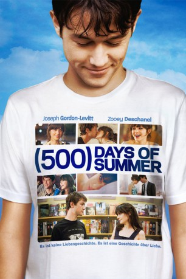
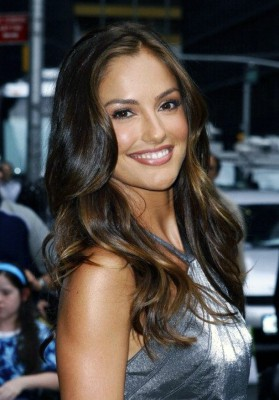
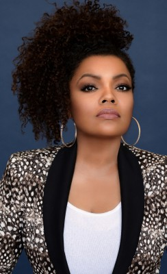
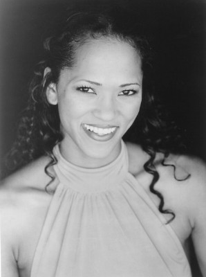

#181 (500) Days of Summer
 
 IMDB-Wertung: 7.7 / 10
IMDB-Wertung: 7.7 / 10  Metascore: 76
Metascore: 76 
Tom ist in Summer verliebt. Seit sie die Schwelle zur Grußkartenfirma, in der er arbeitet, überschritten hat, ist sich der Möchtegern-Architekt sicher: Summer ist die Frau, mit der er sein restliches Leben verbringen möchte. Doch Toms Traumfrau glaubt weder an die Liebe, noch will sie eine Beziehung führen. Abgesehen von diesem fundamentalen Widerspruch haben Summer und Tom jedoch so viele Gemeinsamkeiten, dass sich aus der Bürobekanntschaft bald eine Freundschaft mit Extras entwickelt. Als Summer die Quasi-Beziehung nach 500 Tagen himmlischer Höhen und traumatischer Tiefen schließlich beendet, ruft sich Tom die prägendsten Momente ihres Zusammenseins immer wieder vor Augen, um herauszufinden, warum sein Happily Everafter ein solch jähes Ende fand…
Jahr: 2009
Dauer: 95 Minuten
FSK: 0
Land: USA Studio: Fox Searchlight PicturesTonspuren: DTS - ,
Untertitel:
Auflösung: 1080p (1920×800) Größe: 5529 MB
Genre: Komödie, Drama, Liebe
Regisseur: Marc Webb
Drehbuch: Scott Neustadter, Michael H. Weber
Soundtrack: Mychael Danna, Rob Simonsen
Darsteller:
 Joseph Gordon-Levitt als Tom
Joseph Gordon-Levitt als Tom Zooey Deschanel als Summer
Zooey Deschanel als Summer- Geoffrey Arend als McKenzie
 Chloë Grace Moretz als Rachel
Chloë Grace Moretz als Rachel Matthew Gray Gubler als Paul
Matthew Gray Gubler als Paul Clark Gregg als Vance
Clark Gregg als Vance Patricia Belcher als Millie
Patricia Belcher als Millie- Rachel Boston als Alison
-  Minka Kelly als Autumn - Girl at interview
- Ian Reed Kesler als Douche
 Valente Rodriguez als Employee #1
Valente Rodriguez als Employee #1-  Yvette Nicole Brown als New Secretary
- Nicole Vicius als Partygoer
 Maile Flanagan als Rhoda
Maile Flanagan als Rhoda- Gregory Thompson als Minister
 Richard McGonagle als Narrator
Richard McGonagle als Narrator- Bryan Anthony als Dancer
-  Sybil Azur als Dancer
- Gustavo Carr als Dancer
 Nadine Ellis als Dancer
Nadine Ellis als Dancer- Alejandro Estornel als Dancer
- Tiffany Granath als Dancer
- Jennifer Hamilton als Dancer
 Brandon Henschel als Dancer
Brandon Henschel als Dancer- Kenneth Hughes als Dancer
- Alexandra Nicole Hulme als Dancer
- Tim Lacatena als Dancer
 Rebecca Lin als Dancer
Rebecca Lin als Dancer- Katie Malia als Dancer
 Anthony Marciona als Dancer
Anthony Marciona als Dancer- Christopher Shazar als Dancer
- Tracy Phillips als Dancer
- Nathan Prevost als Dancer
- Ryan Thomas als Dancer
 Christian Vincent als Dancer
Christian Vincent als Dancer- Eileen Abarrca als Summer Lookalike , uncredited
- Olivia Howard Bagg als Summer - Age 12 , uncredited
- Joseph Buttler als Office Worker , uncredited
- Chris Connell als Marcus , uncredited
- Landall Goolsby als Office Worker , uncredited
- Jennifer Hetrick als Sarah , uncredited
 Janis Jones als Greeting Card Company Employee , uncredited
Janis Jones als Greeting Card Company Employee , uncredited- Michael Justice als Rooftop Guy #1 , uncredited
- Samantha Krutzfeldt als Charlie , uncredited
- Michelle Mason als The Most Beautiful Girl in the World , uncredited
- Kayla Gwyneth Morrisey als Girl on the Stairs , uncredited
- Keisha Ramdhanie als Wedding Guest , uncredited
- Haley Smith als Dancer , uncredited
- Sarah Staitman als Soccer Girl , uncredited
- Wesley J. Szabo als Summer's Party Guest , uncredited
Datei: X:\2009(A-F)\(500) Days of Summer (2009, FSKo.Al., 1920x800).mkv seit 14.02.2015
Festplatte: HD 2008(G-Z)-2009(A-F)
 Es gibt insgesamt 91 Filme in der Gruppe '2009(A-F)'
Es gibt insgesamt 91 Filme in der Gruppe '2009(A-F)'